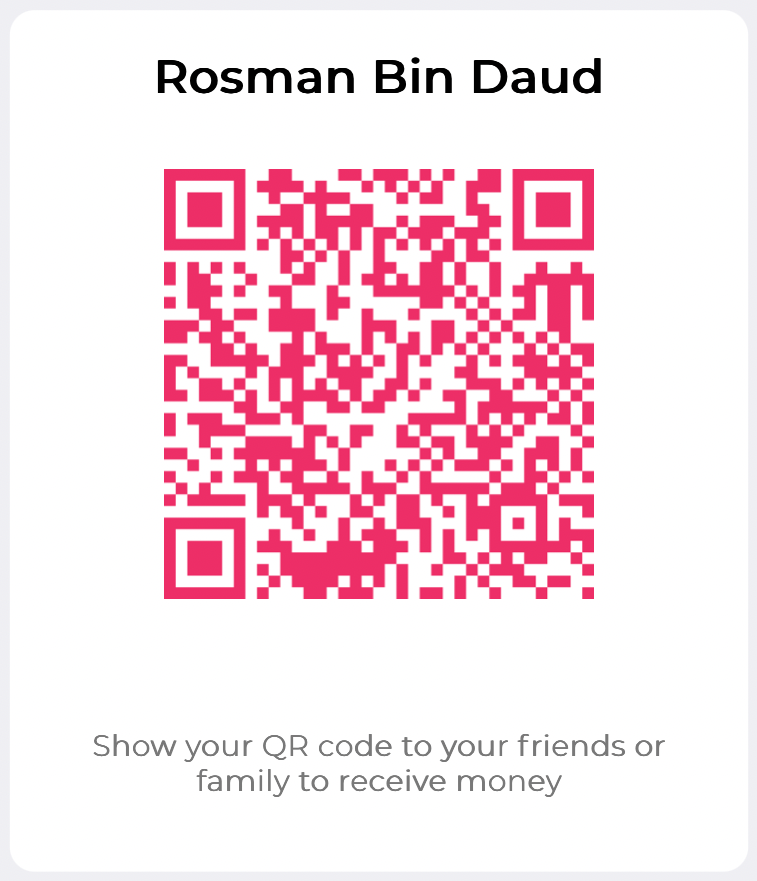

🕌
MySolat
Sokong MySolat
Terima kasih kerana sudi menggunakan MySolat. Sumbangan anda yang ikhlas membantu menampung kos pelayan, yuran Apple/Google Play, serta pembangunan ciri baharu. Setiap sumbangan, walau sekecil mana pun, sangat dihargai. 💚
DuitNow QR
Disyorkan

Imbas QR di atas menggunakan mana-mana app bank tempatan (Maybank, CIMB, BSN, Public Bank, dll.) atau e-wallet (Touch 'n Go, Boost, GrabPay).
Touch 'n Go eWallet
Nombor telefon
012-488 6000
Atas nama
Rosman Daud
Pemindahan Bank
Bank
Maybank Islamic
Nombor akaun
5573 0850 6761
Atas nama
Rosman Daud
Semoga Allah membalas kebaikan anda dengan berlipat ganda.
Jazakumullahu khairan. 🤲